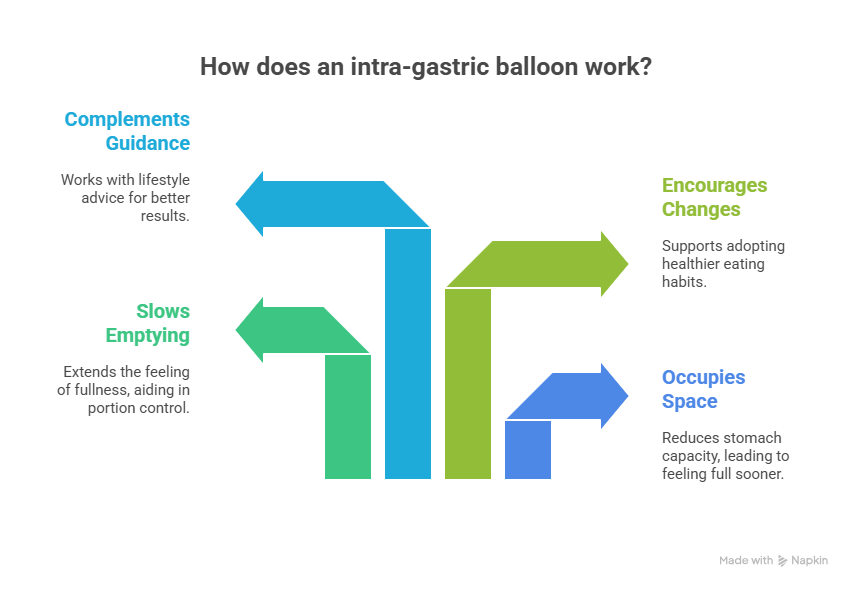
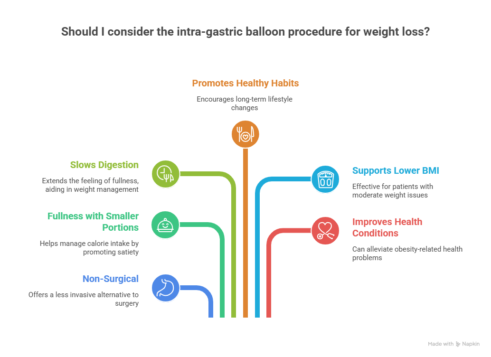

Losing weight can be challenging, especially for individuals who have tried dieting, exercise, and lifestyle changes without achieving meaningful results. With medical technology advancing rapidly, individuals now have safer, non-surgical options that provide real weight-loss outcomes. One of the most effective among them is the Intra-Gastric Balloon, a temporary, reversible, and minimally invasive weight-loss procedure.
If you are considering an Intra Gastric Balloon in Delhi, this updated guide—aligned with Dr Atul Peters’ official treatment process—will help you understand how Intra Gastric Balloon works, who it is suitable for, what benefits to expect, and why this method is becoming a popular choice for people seeking safe and sustainable weight loss.
How Intra Gastric Balloon Work? {Complete Guide}
This article will help you understand how Intra Gastric Balloon works, who it is suitable for, what benefits to expect, and why this method is becoming a popular choice.
Book Your Appointment TodayUnderstanding the Intra-Gastric Balloon
An Intra-Gastric Balloon is a soft, flexible, saline-filled balloon that is placed inside the stomach to help you lose weight. According to Dr Atul Peters’ clinical approach, it is a temporary weight-loss aid designed for people who want to reduce weight without undergoing surgery.
Key features:
- Minimally invasive
- No incisions or stitches
- Placed and removed using endoscopy
- Stays inside the stomach for 6 Months to 1 Year
- Helps reduce food intake naturally
The balloon occupies space inside the stomach, making you feel full sooner, eat smaller portions, and reduce calorie intake—all essential changes required for healthy weight loss.
How Intra-Gastric Balloon Work?
To understand how this non-surgical weight-loss method works, it is important to know how the stomach regulates hunger and satiety.

1. Occupies Space in the Stomach
The balloon is filled with sterile saline, allowing it to expand within the stomach. When it occupies space, it reduces the stomach’s capacity, meaning you feel full earlier than usual.
This directly leads to:
- Smaller meal portions
- Reduced appetite
- Lower daily calorie intake
2. Slows Gastric Emptying
One of the most powerful mechanisms is the slowing of digestion. The balloon keeps food in the stomach for a longer time, resulting in:
- Longer-lasting fullness
- Fewer hunger episodes
- Reduced cravings
This helps you avoid overeating and promotes steady weight reduction.
3. Encourages Positive Behavioural Changes
The balloon serves as a training tool to help you develop better stomach and eating habits. During the 6 months to 1 year, you naturally learn:
- Portion control
- Healthy eating
- Regular meal timings
- Balanced nutrition
These habits continue even after the balloon is removed, ensuring long-term weight maintenance.
4. Complements Lifestyle Guidance
Based on the process followed at Dr Atul Peters’ centre, the balloon works best when combined with:
- Structured diet counselling
- Regular follow-ups
- Exercise recommendations
- Behavioural support
This integrated care is what makes the treatment effective and sustainable.
Step-by-Step Explanation of the Intra-Gastric Balloon Procedure
Here is the complete treatment journey explained in clear, simple steps:
1. Initial Consultation and Assessment
Before the procedure, the doctor evaluates:
- Your BMI
- Medical history
- Existing conditions
- Your readiness for lifestyle changes
This ensures that the balloon is the right choice for you.
Ideal candidates typically have a BMI of 23 or more (for Asians) and 25 or more (for others), especially those who cannot lose weight despite genuine efforts.
2. Endoscopic Balloon Placement (20–30 Minutes)
The balloon is placed inside the stomach using an endoscope—a thin, flexible tube with a camera.
Process:
- Mild sedation is given.
- No cuts or incisions are made.
- The deflated balloon is inserted through the mouth.
- Once positioned, the balloon is filled with sterile saline.
- The endoscope is removed.
Time required:
- 20–30 minutes
- Same-day discharge
3. Adaptation Phase (First 3–5 Days)
During the first few days, the stomach adjusts to the balloon.
You may experience:
- Mild nausea
- Vomiting
- Abdominal discomfort
These symptoms settle quickly with medication.
4. Weight-Loss Phase (First 3–4 Months)
This is when the balloon works most effectively. The stomach capacity is reduced, digestion slows down, and hunger is reduced significantly.
Expected benefits:
- Steady, consistent weight loss
- Improved eating patterns
- Better energy levels
- Reduced dependence on junk food or overeating
5. Regular Follow-Ups and Lifestyle Support
Dr Atul Peters’ approach focuses strongly on follow-up care.
You receive:
- Nutrition counselling
- Exercise guidelines
- Behavioural coaching
- Monitoring of progress
This support ensures maximum results from the balloon.
6. Balloon Removal (Simple Endoscopy)
After 6 months to 1 year, the balloon is deflated and removed.
Process:
- Mild sedation is given.
- An endoscope is used to deflate the balloon.
- It is gently removed through the mouth.
There is no downtime—you can return to daily activities soon after.
Benefits of the Intra-Gastric Balloon Procedure

1. Non-Surgical Weight-Loss Option
The intra-gastric balloon offers a safe and effective way to lose weight without undergoing surgery. There are no cuts, stitches, or scars, as the entire process is done through endoscopy. This makes it suitable for people who want results but prefer to avoid surgical risks. Recovery is quick, and most individuals return home the same day.
2. Helps You Feel Full with Smaller Portions
The balloon occupies space in your stomach, reducing its capacity. As a result, you feel full sooner, even after eating less food than usual. This natural reduction in appetite helps limit calorie intake throughout the day. Over time, this leads to steady and noticeable weight loss.
3. Slows Down Digestion for Longer Satiety
With the balloon inside the stomach, food remains there longer before moving into the intestines. This slower gastric emptying helps you stay satisfied for extended periods. It also prevents frequent snacking and overeating, making weight loss more manageable. The overall effect supports consistent, healthy progress.
4. Promotes Healthy Eating Habits That Last
During the months that the balloon is inside, you gradually adapt to making better food choices and eating controlled portions. These lifestyle improvements continue even after the balloon is removed. This long-term behavioural change is one of the biggest advantages, helping you maintain the weight you lose.
5. Supports Weight Loss in Patients with Lower BMI
Unlike bariatric surgery, the intra-gastric balloon is ideal for individuals with a BMI of 23 or more (for Asians) and 25 or more (for others) who still struggle to lose weight. It provides medical support for people who are not eligible for surgical options but need help achieving healthy weight loss. This makes the procedure accessible to a wider range of individuals.
6. Helps Improve Obesity-Related Health Conditions
Losing weight through the balloon can reduce the severity of other health issues like diabetes, high blood pressure, cholesterol, sleep problems, and joint pain. As your weight decreases, the overall strain on your body also decreases. Many people observe improved energy levels and better overall wellness.
Possible Risks & Side Effects
The intra-gastric balloon is considered very safe, but temporary side effects may occur:
- Nausea
- Vomiting
- Indigestion
- Acid reflux
- Stomach cramps
These usually settle within a few days with medication.
How Intra Gastric Balloon Work? {Complete Guide}
This article will help you understand how Intra Gastric Balloon works, who it is suitable for, what benefits to expect, and why this method is becoming a popular choice.
Book Your Appointment TodayConclusion
The Intra-Gastric Balloon is an excellent non-surgical option for individuals who want to lose weight safely, effectively, and without undergoing invasive surgery. By reducing stomach space, slowing digestion, and helping build healthy habits, the balloon delivers noticeable weight loss within months.
When combined with structured lifestyle guidance—as offered by Dr Atul Peters’ team—patients can maintain long-term results, improve health, and transform their lifestyle for the better.
If you are considering an Intra Gastric Balloon in Delhi, consulting with an experienced specialist like Dr Atul Peters’ can help you understand the best treatment plan for your goals.
Frequently Asked Questions
How long does the Balloon stay in the stomach?
Is Balloon placement painful?
Can I return home the same day?
Are there any dietary restrictions after placement?
How much weight can I expect to lose?
Can the balloon burst or leak?
Will I regain weight after removal?
Who should avoid this treatment?
Recommended Further Reading
Have Personal Health Questions?
Consult with Dr. Atul Peters and our expert multidisciplinary team at Max Smart Super Speciality Hospital, Saket, New Delhi.
Book Your Consultation